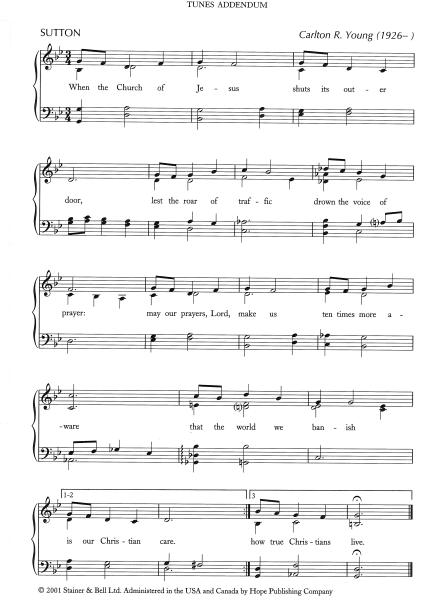
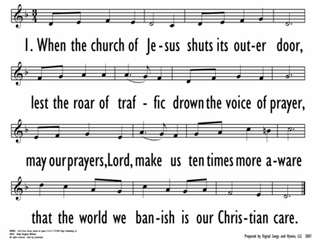
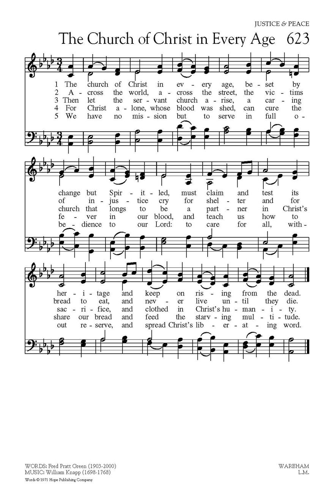

|
|
【若是主的教會】 |
|
1. When the church of Jesus
2. If our hearts are lifted
3. Lest the gifts we offer,
|
若是主的教會，大門常關緊， |
|
WHEN THE CHURCH OF JESUS https://www.hopepublishing.com/find-hymns-hw/hw3065.aspx

 |
|
|
|
|

"When the Church of Jesus" Hymn #592 https://youtu.be/kTy0Q2Tyfeo -
https://youtu.be/pm7hZG0ot_U
| Text: | When the Church of Jesus |
| Author: | Fred Pratt Green |
| Tune: | KING'S WESTON |
| Composer: | Ralph Vaughan Williams |
| Short Name: | Fred Pratt Green |
| Full Name: | Green, Fred Pratt, 1903-2000 |
| Birth Year: | 1903 |
| Death Year: | 2000 |

The name of the Rev. F. Pratt Green is one of the best-known of the contemporary school of hymnwriters in the British Isles. His name and writings appear in practically every new hymnal and "hymn supplement" wherever English is spoken and sung. And now they are appearing in American hymnals, poetry magazines, and anthologies.
Mr. Green was born in Liverpool, England, in 1903. Ordained in the British Methodist ministry, he has been pastor and district superintendent in Brighton and York, and now served in Norwich. There he continued to write new hymns "that fill the gap between the hymns of the first part of this century and the 'far-out' compositions that have crowded into some churches in the last decade or more."
--Seven New Hymns of Hope , 1971. Used by permission.
Tune Information
| Title: | KING'S WESTON |
| Composer: | Ralph Vaughan Williams (1925) |
| Meter: | 6.5.6.5 D |
| Incipit: | 12321 71234 51345 |
| Key: | d minor |
| Copyright: | Copyright 1925 by R. Vaughan Williams |
| Short Name: | Ralph Vaughan Williams |
| Full Name: | Vaughan Williams, Ralph, 1872-1958 |
| Birth Year: | 1872 |
| Death Year: | 1958 |

Through his composing, conducting, collecting, editing, and teaching, Ralph Vaughan Williams (b. Down Ampney, Gloucestershire, England, October 12, 1872; d. Westminster, London, England, August 26, 1958) became the chief figure in the realm of English music and church music in the first half of the twentieth century. His education included instruction at the Royal College of Music in London and Trinity College, Cambridge, as well as additional studies in Berlin and Paris. During World War I he served in the army medical corps in France. Vaughan Williams taught music at the Royal College of Music (1920-1940), conducted the Bach Choir in London (1920-1927), and directed the Leith Hill Music Festival in Dorking (1905-1953). A major influence in his life was the English folk song. A knowledgeable collector of folk songs, he was also a member of the Folksong Society and a supporter of the English Folk Dance Society. Vaughan Williams wrote various articles and books, including National Music (1935), and composed numerous arrangements of folk songs; many of his compositions show the impact of folk rhythms and melodic modes. His original compositions cover nearly all musical genres, from orchestral symphonies and concertos to choral works, from songs to operas, and from chamber music to music for films. Vaughan Williams's church music includes anthems; choral-orchestral works, such as Magnificat (1932), Dona Nobis Pacem (1936), and Hodie (1953); and hymn tune settings for organ. But most important to the history of hymnody, he was music editor of the most influential British hymnal at the beginning of the twentieth century, The English Hymnal (1906), and coeditor (with Martin Shaw) of Songs of Praise (1925, 1931) and the Oxford Book of Carols (1928).
Bert Polman
History of Hymns: "When the Church of Jesus"
"When the Church of Jesus"
Fred Pratt Green
The United Methodist Hymnal, No. 592

When the church of Jesus
shuts its outer door,
lest the roar of traffic
drown the voice of prayer,
may our prayers, Lord, make us
ten times more aware
that the world we banish
is our Christian care.*
If there is anyone worthy to be called a successor to hymn writer Charles
Wesley, it may be Fred Pratt Green (1903-2000).
An Englishman educated at Didsbury College in Manchester, Green was ordained
in the Methodist ministry in 1928, serving circuits throughout the country
between 1927 and 1969. During his ministry he wrote plays and hymns and
published three collections of his poems.
But it was not until his retirement that Green’s hymn writing blossomed, and
he composed over 300 hymns.
Generally considered to be the leader of the “hymnic explosion” that began
in the 1960s, Green’s hymns appear more often than any other 20th century
hymn writer in English language hymnals published in North America since
1975. The
United Methodist Hymnal contains 15 original hymns and two
translations by Green.
“When the church of Jesus,” based on James 2:14-17, continues the tradition
of hymns that focus on the needs of the cities. That tradition began in the
early 20th century with Methodist minister Frank Mason North’s hymn, “Where
cross the crowded the ways of life” (UM
Hymnal, No. 427) and continues into the mid-century with
British musician/theologian and hymnal editor Erik Routley’s “All who love
and serve your city” (UM
Hymnal, No. 433).
This hymn has is one of the most prophetic hymns of the 20th century. “When
the church of Jesus” was written in 1968 for the Stewardship Campaign of
Trinity Methodist Church in London. UM
Hymnal editor Carlton Young notes that this hymn “was the
poet’s first effort in an amazing retirement career as a hymn writer.”
While North’s 1903 city hymn was written in the context of the Industrial
Revolution and the swelling of the cities of the northeastern United States
as people moved north to find work or immigrants became a source of labor,
Green’s hymn was composed amidst the turmoil of the 1960s, when urban decay
was rife, yet long-established urban congregations appeared to ignore the
plight of the changing neighborhoods around them, continuing in the manner
of earlier decades when life in the cities seemed less complicated and
hostile.
The closed “outer door” of stanza one is a powerful image that serves as
both a reality and a metaphor for a congregation that appears to blithely
continue its sacred rituals with little awareness of or response to the
human suffering of those who pass by the church or rest on its front steps.
The second stanza exposes the false dichotomy between offering worship where
“our hearts are uplifted” and engaging the “hungry, suffering world of
ours.” The reference to uplifted hearts echoes the opening of the Sursum
corda (“Lift up your hearts. . . . ”) that begins the
opening dialogue leading to the celebration of Communion. One of the most
unusual ironies of 20th-century hymnody appears in the second stanza, which
reads, “lest our hymns should drug us to forget [the world’s] needs.”
The author does not let up on the hymn singer in the final stanza. Just
because “we offer . . . money, talents [and] time” as a part of our gifts to
the church, these offerings should not “serve to salve our conscience, to
our secret shame” of ignoring the suffering world around us.
The final stanza ends with a petition to “reprove [and] inspire us” to
follow Christ’s example, and to “teach us, dying Savior, how true Christians
live.”
*©
1969 Hope Publishing Company, Inc. Carol Stream, IL 60188. Used by
permission. All rights reserved.
Dr. Hawn is professor of sacred music at Perkins School of Theology.
https://www.umcdiscipleship.org/resources/history-of-hymns-when-the-church-of-jesus
The Church of Christ in every age
Beset by change but Spirit led,
Must claim and test its heritage
And keep on rising from the dead.
Across the world, across the street,
The victims of injustice cry
For shelter and for bread to eat,
And never live until they die.
Then let the servant Church arise,
A caring Church that longs to be
A partner in Christ's sacrifice,
And clothed in Christ's humanity.
For he alone, whose blood was shed,
Can cure the fever in our blood,
And teach us how to share our bread
And feed the starving multitude.
We have no mission but to serve
In full obedience to our Lord:
To care for all, without reserve,
And to spread his liberating Word.
Words © 1971 Hope Publishing Company, 380 S Main Pl, Carol Stream, IL 60188

https://www.hopepublishing.com/find-hymns-hw/hw3092.aspx
History of Hymns: "The Church of Christ in Every Age"
"The Church of Christ in Every Age"
Fred Pratt Green
UM Hymnal, No. 589
The church of Christ, in every age
beset by change but Spirit-led,
must claim and test its heritage
and keep on rising from the dead.
Fred Pratt Green (1903-2000) was born in Roby, England, just outside of
Liverpool, to Charles Green and Hannah Greenwood. They were both very
successful business owners as well as a strong religious influence over
young Fred.
The youngest of three children, he was born into a Christian home he
described as “a place where religion was scrupulously observed but never
made burdensome.” Following his education, Green was ordained in the British
Methodist Church in 1924 and continued his ministry in various parishes
throughout England well into the 1940s.
As a minister, he rarely had time for outside interests, but when he met
devout poet Fallon Webb, he was instantly fascinated. The two exchanged
poetry for nearly 20 years, setting the stage for Green to focus on hymn
writing after his retirement from active ministry. He died at age 97,
leaving behind a legacy filled with words of wisdom for us to read and sing.
Green’s hymns reflect his concern with social issues. Many were written to
serve the liturgical needs of the modern church, such as specific seasons of
the Christian year. Others speak to topics for which there were few
traditional hymns available.
Eminent British hymnologist Erik Routley noted that with some exceptions,
the Methodist influence in hymnody had decreased since the hymns and
translations of the Wesley brothers. When a supplement to the Methodist
hymnal, Hymns
and Songs, was released in Great Britain in 1969, Routley declared
“this [trend of few significant Methodist hymn writers] has changed; it has
been irreversibly changed by Fred Pratt Green.”
The Rev. Carlton Young, editor of the UM
Hymnal, notes, “This hymn calls the church to be the agent of change
and reconciliation in the struggle against injustice and hunger.”
Green composed the hymn in 1969, a time of social unrest throughout much of
the world, including the U.S., Europe and South Africa. Published at first
under the heading of “The Caring Church,” it appeared in Green’s 26
Hymns (1971) and then in New
Church Praise (1975), where it came into prominence.
The first U.S. hymnal to publish the hymn, albeit with some modifications,
was the Lutheran
Book of Worship (1978). Since then, “The Church of Christ
in Every Age” has been included in many hymnals.
Particular phrases in the hymn reveal the provocative and powerful images
for which Green is known. For example, stanza one concludes that the church
“must claim and test its heritage / and keep on rising from the dead.”
Stanza two focuses on the poor and hungry and the paradox of those who “cry
for shelter and for bread to eat, / and never live until they die.”
Stanza three challenges the “servant church” to become “a partner in
Christ’s sacrifice” and to be “clothed in Christ’s humanity.” Stanza four
focuses on the image of Christ “whose blood was shed,” and who as a result
“can cure the fever in our blood” so that we will “share our bread and feed
the starving multitude.”
An omitted original stanza four reveals the vintage prophetic Green, who
according to Dr. Young, minces no words, “counter[ing] the social gospel’s
optimistic view of human nature”:
And all men suffer deeper ills:
for there’s fever in our blood
that prostitutes our human skills
and poisons all our brotherhood.
The final stanza clarifies the purpose of the church: “We have no mission
but to serve in full obedience to our Lord. . . .” The mission of the church
is to “spread [Christ’s] liberating word.”
*© 1971 Hope Publishing Company, Carol Stream, IL 60188. All rights
reserved. Used by permission.
Dr. Hawn is professor of sacred music at Perkins School of Theology, SMU.
https://www.umcdiscipleship.org/resources/history-of-hymns-the-church-of-christ-in-every-age
“The Church of Christ in Every Age” (Fred Pratt Green, 1969) Robin Knowles Wallace (work in progress)
https://oimts.files.wordpress.com/2013/04/2007-9-wallace.pdf